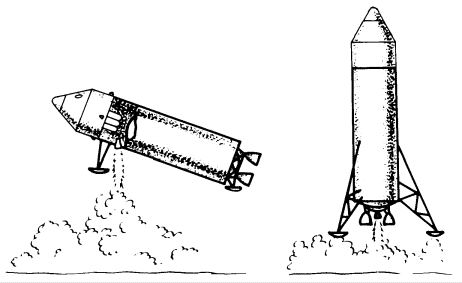
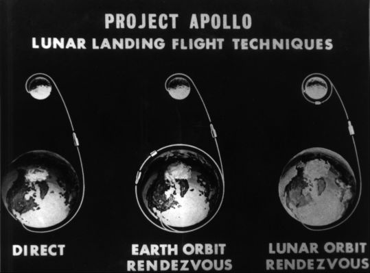
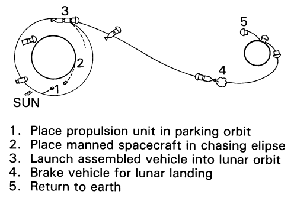
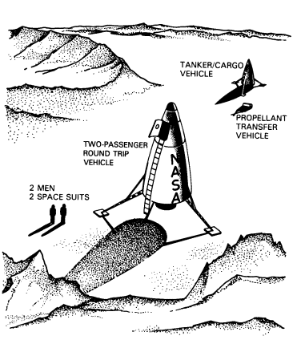

NASA Administrator James Webb in early 1961 had inherited an agency assumption that direct ascent was probably the natural way to travel to the moon and back. It was attractive because it seemed simple in comparison to rendezvous, which required finding and docking with a target vehicle in space. But direct flight had drawbacks, primarily its need for the large rocket called Nova, which would be costly and difficult to develop. And the direct flight mission, itself, had been worked out only in the most general terms. At a meeting in Washington in mid-1960, the first NASA Administrator, Keith Glennan, had asked how a spacecraft might be landed on the moon. Max Faget of the Space Task Group had described a mission in which the spacecraft would first orbit the moon and then land, either in an upright position on deployable legs or horizontally using skids on the descent stage . Wernher von Braun of Marshall and William Pickering of the Jet Propulsion Laboratory JPL thought it would be unnecessary to orbit the moon first. As Faget recalled, "Dr. Pickering [said] you don't have to go into orbit; . . . you just aim at the moon and, when you get close enough, turn on the landing rockets and come straight in. . . . I thought that would be a pretty unhappy day if, when you lit up the rockets, they didn't light."1

Sketched at the left are two landing techniques proposed for the direct ascent mode.
Direct flight also had supporters outside NASA. The Air Force had worked since 1958 on a plan for a lunar expedition. Called LUNEX, this proposal evolved from the earlier "Man-in-Space-Soonest" studies that had lost out in competition with Project Mercury. Major General Osmond J. Ritland, Commander of the Space Systems Division of the Air Force Systems Command, viewed LUNEX as a way to satisfy "a dire need for a goal for our national space program." When President Kennedy announced on 25 May 1961 that a lunar landing would be that goal, the Space Systems Division offered to land three men on the moon and return them, using direct flight and a large three-stage booster. SSD believed the mission could be accomplished by 1967 at a cost of $7.5 billion.2

Three principal contending lunar landing techniques were suggested for the Apollo program: direct ascent, above left; earth-orbit rendezvous, above center; and lunar-orbit rendezvous.
Rendezvous appeared dangerous and impractical to some NASA engineers, but to others it was the obvious way to eliminate the need for gigantic Nova-size boosters. Foremost among the variants in this approach was direct flight's chief competitor, earth-orbit rendezvous (EOR). The von Braun group had revealed an interest in this mode when it briefed Glennan in December 1958 - long before its transfer from the Army to NASA. Von Braun had made a strong pitch for using EOR and the Juno V later Saturn booster, painting a pessimistic picture of developing anything large enough for direct ascent. Agreeing that direct flight was basically uncomplicated, von Braun nevertheless said he favored earth-orbit rendezvous because smaller vehicles could be employed. He sidestepped the problems of launching as many as 15 Saturns in rapid succession to rendezvous and dock in orbit to do the job,3
While working for the Army, the von Braun team published a study called "Project Horizon." Billed as a plan for establishing a lunar military outpost, Horizon justified bases on the moon in terms of the traditional military need for high ground, but it emphasized political and scientific gains as well. Again, the operational techniques would require launching several rockets and refueling a vehicle in earth orbit before going on to the moon.4 On 18 June 1959, NASA Headquarters had asked the Army Ballistic Missile Agency (ABMA) for a study by the von Braun team of a lunar exploration program based on Saturn boosters. In its report of 1 February 1960, ABMA indicated there were several possibilities for a lunar mission, but only two - direct flight and earth-orbit rendezvous - seemed feasible. Reaffirming its authors' belief in rendezvous around the earth as the most attractive approach, the report continued: "If a manned lunar landing and return is desired before the 1970's, the SATURN vehicle is the only booster system presently under consideration with the capability to accomplish this mission."5

Earth-orbit rendezvous.
After transferring to NASA and becoming the Marshall Space Flight Center, the von Braun group continued its plans for developing and perfecting its preferred approach. In January 1961, Marshall awarded 14 contracts for studies of launching manned lunar and planetary expeditions from earth orbit and for investigations of the feasibility of refueling in orbit.6 By mid-year, Marshall engineers were gathering NASA converts to help them push for earth-orbital rendezvous.

In this proposed version of a lunar-surface-rendezvous procedure, a propellant-transfer vehicle takes fuel from the tanker to a manned space vehicle. After loading the fuel, the two astronauts would fire the engine of their spacecraft to return to the earth.
Across the country from Huntsville, another NASA center had different ideas about the best way to put man on the moon. Jet Propulsion Laboratory in Pasadena, California, suggested a link-up of vehicles on the moon itself. A number of unmanned payloads - a vehicle designed to return to earth and one or more tankers - would land on the lunar surface at a preselected site. Using automatic devices, the return vehicle could then be refueled and checked out by ground control before the crew left the earth. After the manned spacecraft arrived on the moon, the crew would transfer to the fully fueled return vehicle for the trip home. One of the earliest proposals for this approach was put together by Allyn B. Hazard, a senior development engineer at the laboratory. His 1959 scheme laid the groundwork for JPL's campaign for lunar-surface rendezvous during the Apollo mode deliberations.7
Even before the President's May 1961 challenge, Pickering had tried to sell lunar-surface rendezvous to NASA's long-range planners. Earlier that month, he had met in Washington with Abraham Hyatt, Director of Program Planning and Evaluation, to discuss this method of landing men on the moon. "We seriously believe," he later wrote, "that this is a better approach to getting man there quickly than the approaches calling for a very large rocket." Pickering favored this mode because the Saturn C-2 would be adequate for the job, unmanned spacecraft could develop the techniques of vertical descent and soft landings, NASA could space the launches months or even years apart, and the agency need not commit the manned capsule to flight until very late in the program (and then only if everything else was working properly). He admitted that the small payload capability of the C-2 would restrict the early missions to one-man flights but contended that "it is easy to extend the technique for larger missions, as larger rockets become available."8 Hyatt assured Pickering that Headquarters would examine all suggested modes, while confessing to a certain incredulity about this approach. "The idea . . . leaves me with very strong reservations," Hyatt said.9
The fact that the United States had no large boosters in its inventory caused several farfetched schemes to surface. One such proposal promoted rendezvous and refueling while in transit to the moon, a concept pushed persistently by a firm named AstraCo. During the summer of 1960, AstraCo argued that this approach would "improve the mission capability of fixed-size earth launch systems." At the request of Senator Paul H. Douglas, NASA officials met with two of the company's representatives in Washington on 6 December 1960. After a discussion of the physical aspects of this kind of rendezvous and an analysis of fuel consumption and weight factors, the visitors were told that NASA was not interested. Three months later, on 14 March 1961, AstraCo took its case through another congressman to the NASA Administrator, and Webb asked his staff to take a second look. William Fleming and Eldon Hall calculated that rendezvous while on the way to the moon would save very little more weight and fuel than earth-orbit rendezvous and would be "far less reliable and consequently far more hazardous." Fleming recommended that this scheme be turned down, once and for all. Webb concurred.10
Another approach was the proposal to send a spacecraft on a one-way trip to the moon. In this concept, the astronaut would be deliberately stranded on the lunar surface and resupplied by rockets shot at him for, conceivably, several years until the space agency developed the capability to bring him back! At the end of July 1961, E. J. Daniels from Lockheed Aircraft Corporation met with Paul Purser, Technical Assistant to Robert Gilruth, to discuss a possible study contract on this mode. Purser referred Daniels to NASA Headquarters. Almost a year later, in June 1962, John N. Cord and Leonard M. Seale, two engineers from Bell Aerosystems, urged in a paper presented at an Institute of Aerospace Sciences meeting in Los Angeles that the United States adopt this technique for getting a man on the moon in a hurry. While he waited for NASA to find a way to bring him back, they said, the astronaut could perform valuable scientific work. Cord and Seale, in a classic understatement, acknowledged that this would be a very hazardous mission, but they argued that "it would be cheaper, faster, and perhaps the only way to beat Russia."11 There is no evidence that Apollo planners ever took this idea seriously.
Amid these likely and unlikely suggestions for overcoming the country's limited booster capacity came yet another plan, lunar-orbit rendezvous (LOR), which seemed equally outlandish to many NASA planners. As the name implies, rendezvous would take place around the moon rather than around the earth. A landing craft, a separate module, would descend to the lunar surface. When the crew finished their surface activities, they would take off in the lander and rendezvous with the "mother" ship, which had remained in orbit about the moon. They would then transfer to the command module for the voyage back to the earth.12
Early in 1959 this mode was seen primarily as a way to reduce the total weight of the spacecraft. Although most NASA leaders appreciated the weight saving, the idea of a rendezvous around the moon, so far from ground control, was almost frightening.
Perhaps the first identifiable lunar-orbit rendezvous studies were those directed by Thomas Dolan of the Vought Astronautics Division, near Dallas. In December 1958, Dolan assembled a team of designers and engineers to study vehicle concepts, looking for ways for his company to share in any program that might follow Project Mercury. From mid-1959, the group concentrated on lunar missions, including a lunar landing, as the most probable prospect for future aerospace business. Dolan and his men soon came up with a plan they called MALLAR, an acronym for Manned Lunar Landing and Return.
Dolan's group recognized very early that energy budgets were the keys to space flight (certainly no radical discovery). It conceived of a modular spacecraft, one having separate components to perform different functions. Dolan said, "One could perceive that some spacecraft modules might be applied to both Earth-orbital and lunar missions, embodying the idea of multimanned and multimodular approaches to space flight." With this as the cornerstone of a lunar landing program, Dolan concluded that the best approach was to discard the pieces that were no longer needed. And he saw no reason to take the entire spacecraft down to the lunar surface and back to lunar escape velocity. MALLAR therefore incorporated a separate vehicle for the landing maneuver.13
At the end of 1959 the Dolan team prepared a presentation for NASA. Early in January 1960, J. R. Clark, Vice President and General Manager of Vought Astronautics, wrote Abe Silverstein about Dolan's concept. The MALLAR proposal, Clark said, considered not only costs and vehicles but schedules. He also cited the advantages of the modular approach, mission staging, and the use of rendezvous.14
Nothing came of the proposal, although Dolan tried to interest NASA in MALLAR for the next two years. He found many technical people sympathetic to his ideas, but he was signally unsuccessful in winning financial support. He did get several small contracts from Marshall, but these were intended to bolster Marshall's stand on rendezvous in earth orbit. Vought tried in vain to win part of Apollo, first competing for the feasibility study contracts in the latter half of 1960 and then, a year later, teaming with McDonnell Aircraft Corporation on the spacecraft competition. Because of these failures, Dolan and his group gradually lost the support of their corporate management.15 Thereafter, Chance Vought mostly faded out of the Apollo picture - although the company competed (and lost) once more, when the lunar landing module contracts were awarded in 1962.16
1. Maxime A. Faget, interview, Houston, 15 Dec. 1969; Ivan D. Ertel, notes on Caldwell C. Johnson interview, 10 March 1966. See also John M. Logsdon, "Selecting the Way to the Moon: The Choice of the Lunar Orbital Rendezvous Mode," Aerospace Historian 18, no. 2 (June 1971): 63-70.
2. U.S. Air Force, "Lunar Expedition Plan: LUNEX," USAF WDLAR-S-458, May 1961.
3. Wernher von Braun, Ernst Stuhlinger, and H[einz] H. Koelle, "ABMA Presentation to the National Aeronautics and Space Administration," ABMA Kept. D-TN-1-59, 15 Dec. 1958, pp. 113-15.
4. U.S. Army, "Project Horizon, Phase I Report: A U.S. Army Study for the Establishment of a Lunar Military Outpost," 8 June 1959, vol. 1, "Summary": 1-3, 17-26; 2, "Technical Considerations and Plans," passim, but esp. pp. 4-6, 139-41.
5. Army Ballistic Missile Agency, "A Lunar Exploration Based upon Saturn-Boosted Systems," ABMA Kept. DV-TR-2-60, 1 Feb. 1960, pp. 224-40.
6. House Committee on Science and Astronautics, Aeronautical and Astronautical Events of 1961: Report, 87th Cong., 2nd sess., 7 June 1962, p. 3; idem, Orbital Rendezvous in Space: Hearing, 87th Cong., 1st sess., 23 May 1961, pp. 16-17; J. Thomas Markley to Assoc. Dir., STG, "Trip report . . . on May 10, 11, and 12, 1961 to Marshall Space Flight Center (Huntsville), Chance Vought (Dallas) and Douglas (Los Angeles)," 19 May 1961; Koelle to Robert R. Gilruth, "Mid-tem (6-month) Contractor Reviews on Orbital Launch Operations Study," 22 May 1961.
7. [Nicholas E. Golovin], draft report of DoD-NASA Large Launch Vehicle Planning Group (LLVPG), 1 [November 1961], pp. 6B-39 through 6B-42; Allyn B. Hazard, "A Plan for Manned Lunar and Planetary Exploration," November 1959.
8. William H. Pickering to Abraham Hyatt, 22 May 1961.
9. Hyatt to Pickering, 31 May 1961.
10. William A. Fleming to Admin., NASA, "Comments on In-transit rendezvous proposal by AstraCo," 5 April 1961; Charles L. Kaempen, "Space Transport by In-Transit Rendezvous Techniques," August 1960; James E. Webb to James Roosevelt, 26 April 1961.
11. Paul E. Purser to Gilruth, "Log for week of July 31, 1961," 10 Aug. 1961; House Committee on Science and Astronautics, Astronautical and Aeronautical Events of 1962: Report, 88th Cong., 1st sess., 12 June 1963, p. 112; "Apollo Chronology," MSC Fact Sheet 96, n.d., p. 19; John M. Cord and Leonard M. Scale, "The One-Way Manned Space Mission," Aerospace Engineering 21, no. 12 (1962) : 60-61, 94-102.
12. [Golovin], draft rept., pp. 6B-36 through 6B-39.
13. Thomas E. Dolan, interview, Orlando, Fla., 14 Oct. 1968.
14. J. R. Clark to NASA, Attn.: Abe Silverstein, "Manned Modular Multi-Purpose Space Vehicle Program - Proposal For," 12 Jan. 1960, with enc., "Manned Modular Multi-Purpose Space Vehicle."
15. Dolan interview; House Committee on Science and Astronautics, Orbital Rendezvous in Space, pp. 16-17; Markley to Assoc. Dir., STG, 19 May 1961; Koelle to Gilruth, 22 May 1961; "Participating Companies or Company Teams" in "Partial Set of Material for Evaluation Board Use," n.d. [ca. 7 Sept. 1960]; NASA MSC, "Source Evaluation Board Report, Apollo Spacecraft, NASA RFP 9-150," 24 Nov. 1961.
16. MSC, Apollo Spacecraft Program Off. (ASPO) activity rept., 23 Sept.-6 Oct. 1962; H. Kurt Strass, interview, Houston, 30 Nov. 1966.